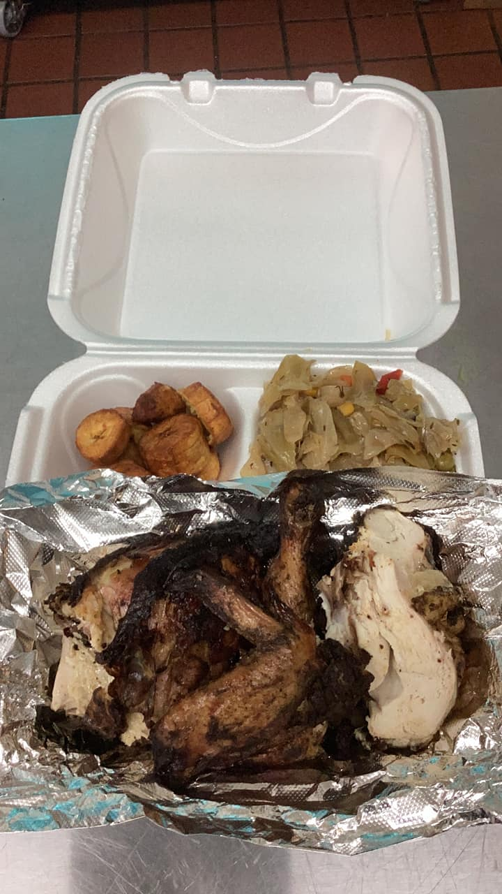
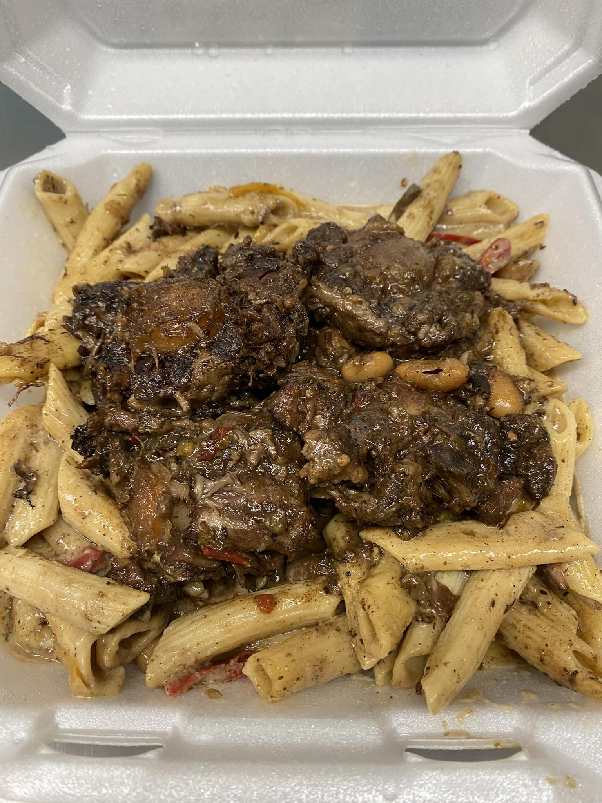
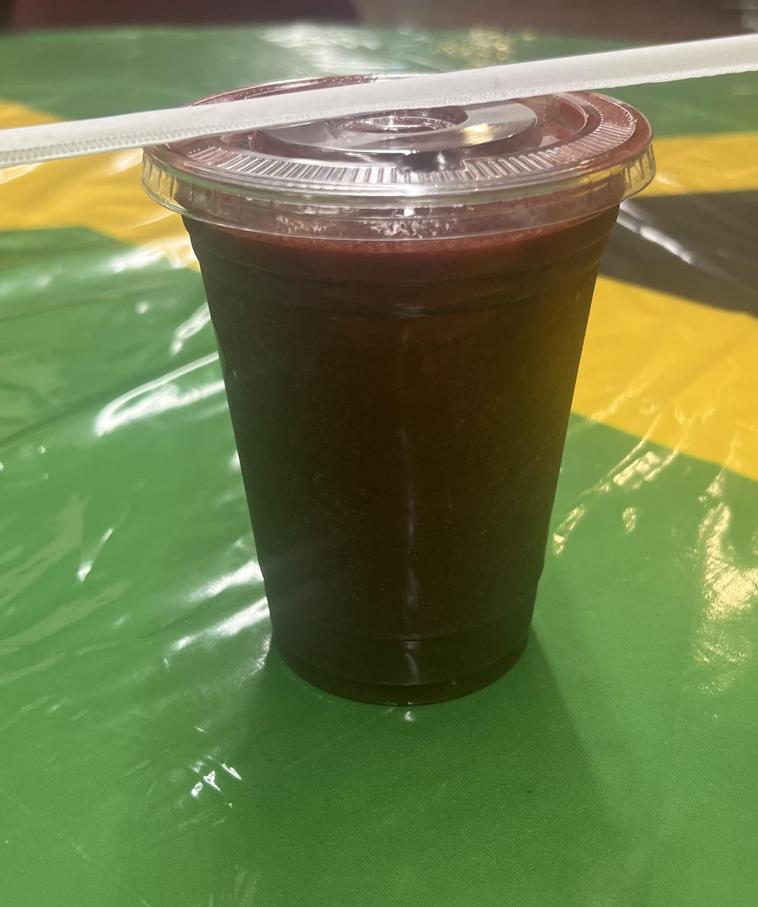

Authentic Jamaican Flavor. Made with Love.
Welcome to Mama Jerk N Tings
From spicy jerk chicken to flavorful pasta dishes and refreshing Caribbean juices, our menu is full of love and island vibes. Whether you're local or just passing through, come get a taste of the Caribbean right here in town.

Jerk Chicken

Oxtail Rasta Pasta

Tropical Juices
What People Are Saying
"The food is amazing and I love supporting small businesses! As a Caribbean/West-Indian American, it's hard finding good Caribbean and Jamaican food, especially in the suburbs, but Mama Jerk hits." – Allisha C.
"Oxtail... delicious extremely tender, brown chicken stew, is so flavorful. Mac and cheese is amazing!!! Yams are delicious (could be cooked a little more)." – L B.
"Had their jerk salad baby, it was FIRE!!! Will definitely be back for MORE!! Love their drinks, too! A little hidden gem in Waukegan." – Linda C.